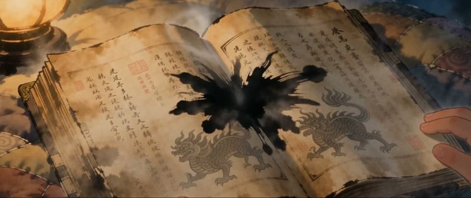
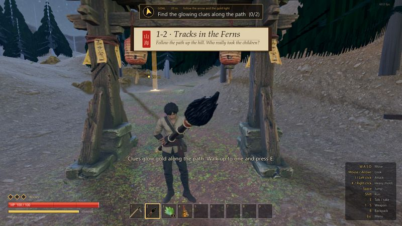
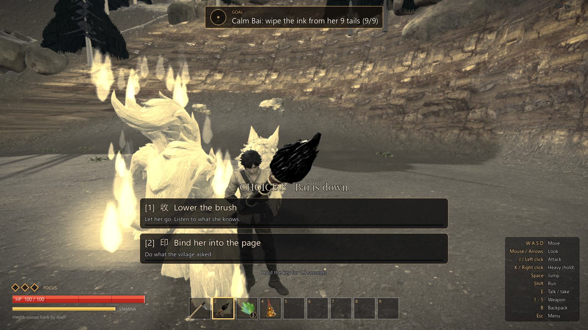

Story故事Story and journey故事与旅程
At night a student opens the Shan Hai Jing. The pages tear, black ink pours out and pulls the student in. To get home, mend the torn pages: some monsters must be stopped, some only need to be understood.深夜，一位学生翻开古老的《山海经》。书页撕裂，黑墨涌出，把他拖进书里。想回家，就得修补被撕裂的书页：有些怪物必须阻止，有些只需要被理解。
The student wakes in Green Hill village. At dusk Granny Shen warns of the Jufu, great apes mad with black ink, and hands over a hoe. The village hides, a ten-second countdown runs, and the Jufu come through the gate in waves. Then a white nine-tailed fox lands among them. The Jufu flee; she knocks the student flat, sniffs the ink on his hands, and does not bite.他在青丘村醒来。黄昏时，申婆婆警告说，日落后被黑墨染疯的巨猿“居茀”会来袭，并递给他一把锄头。村民躲进屋里，十秒倒计时之后，居茀一波接一波从城门涌入。这时一只白色九尾狐落进村里：居茀四散奔逃，她把他扑倒，嗅了嗅他指尖的墨，却没有咬下去。
Granny gives him the Binding Brush, which writes a creature back into its page, and the cub's bell. On the hill he follows clues, finds a cub in a snare (Choice A) and learns in the den that Bai is not hunting people, she is looking for her lost cubs. The bell calls her; ink is eating her nine tails, and the brush wipes it away. Then Choice B: lower the brush, or bind her into the page as the village asked. Two endings.申婆婆交给他缚灵笔（把生灵写回书页，而不是杀死它）和幼崽的铃铛。上山后，他沿着线索前行，在陷阱里发现一只幼崽（选择甲），又在洞穴里看到狐狸的记忆：白不是在猎杀人，而是在寻找走失的孩子。铃声唤来了白，黑墨正侵蚀她的九条尾巴，他用笔一一抹去。最后是选择乙：放下笔，或照村子的请求把她封入书页。两种结局。



